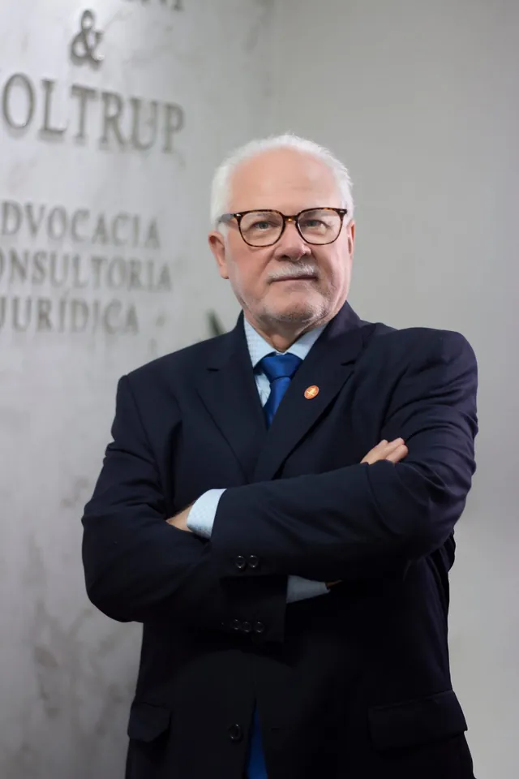
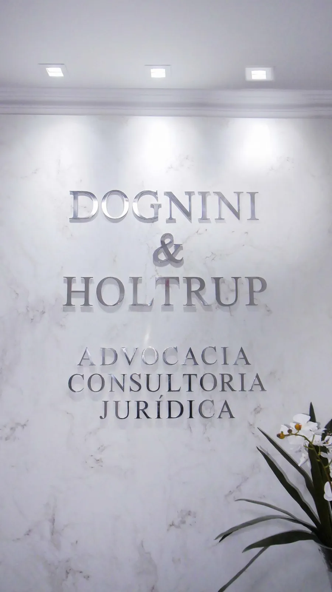
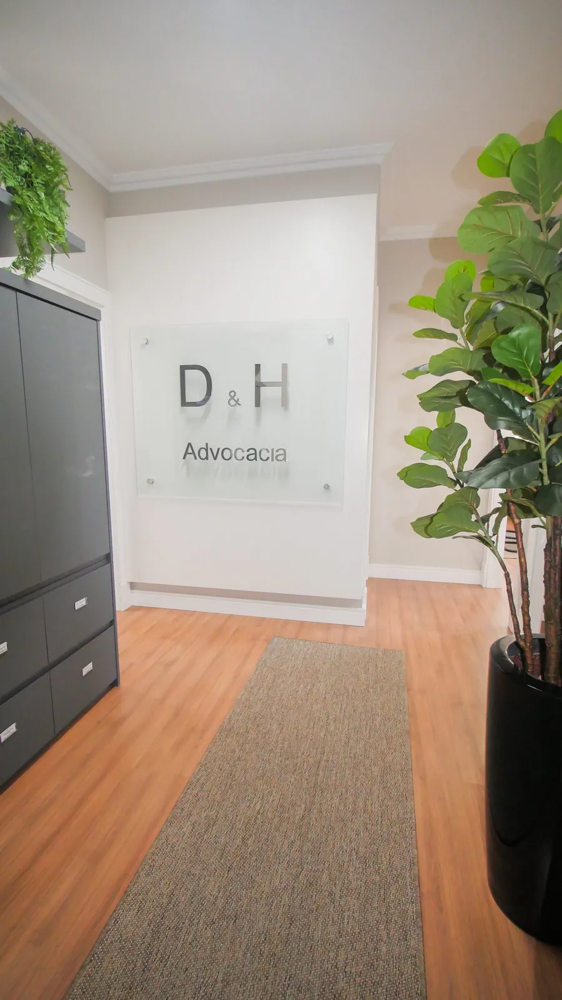
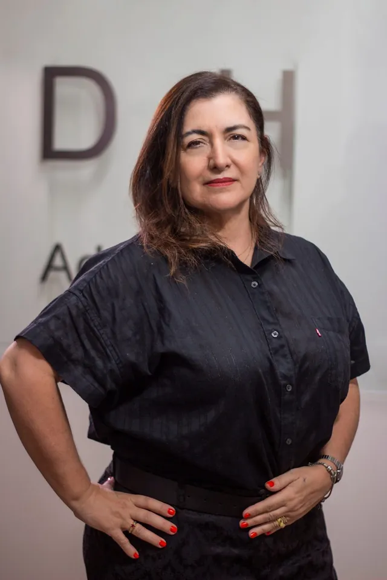
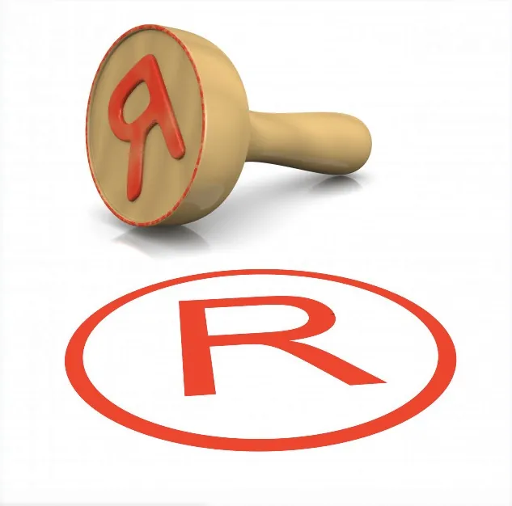

Sócio-fundador
Olímpio Dognini
OAB/SC 11.301
- Direito — FURB (1996)
- Economia — FURB (1985)
- Especialização em Direito Previdenciário, Constitucional e Processual Civil
Advocacia e Consultoria Jurídica · Vale do Itajaí
Assessoria e consultoria em oito áreas do Direito, com escritórios em Blumenau, Brusque, Pomerode e Timbó — e atendimento online.


O escritório
A Dognini & Holtrup Advocacia e Consultoria Jurídica atua há mais de 25 anos assessorando pessoas físicas e empresas. Mantemos uma equipe experiente e capacitada, que busca as melhores alternativas para cada situação — esclarecendo dúvidas e propondo soluções jurídicas adequadas e bem fundamentadas.
Da consultoria preventiva à condução de processos judiciais e administrativos, o cliente fala diretamente com o advogado responsável pelo seu caso.
Os sócios-fundadores são graduados em Direito e em Economia pela FURB — uma leitura financeira que pesa em questões empresariais, patrimoniais e previdenciárias.
Oito advogados com especializações em Processo Civil, Direito do Trabalho, Previdenciário, Empresarial, Constitucional e Direito Digital.
Quatro escritórios no Vale do Itajaí, com o mesmo padrão de atendimento em cada cidade.
Áreas de atuação
Atuação consultiva e contenciosa, para pessoas físicas e jurídicas. Selecione uma área para conhecer os temas atendidos.
Representação de pessoas físicas e jurídicas nas mais variadas questões civis: criação, revisão e análise de contratos; responsabilidade civil e ações indenizatórias; execução de títulos de crédito (duplicatas, cheques, notas promissórias); acidentes de trânsito, entre outros.
Consultoria e assessoria na compra, venda ou permuta de imóveis; acompanhamento de processos de aquisição e alienação; análise da documentação do imóvel, de seus proprietários atuais e anteriores e dos possíveis adquirentes, entre outros.
Marcas, patentes, desenhos industriais e direitos autorais — de obras artísticas ou de software — são ativos de primeira ordem na economia atual. Atuamos na representação junto ao INPI para registro de marcas, patentes e desenhos industriais, e na condução de ações judiciais envolvendo infração a direitos autorais, inclusive de software.
Rescisão direta e indireta do contrato de trabalho, reconhecimento de vínculo, aplicação e reversão de justa causa, verbas rescisórias, horas extras, adicionais noturno, de periculosidade e de insalubridade, intervalos e jornada, equiparação salarial, estabilidade, acidente de trabalho, assédio moral, FGTS, salários “por fora”, comissões e gorjetas, desvio e acúmulo de função, entre outros.
Atuação estratégica nas frentes bancária e trabalhista para atender aos interesses de empresas e empresários, por via administrativa ou judicial. Representação em processos e procedimentos administrativos, assessoria em acordos e negociações coletivas de trabalho e planejamento patrimonial, como a constituição de holdings familiares.
Causas envolvendo relações de consumo: propaganda enganosa, descumprimento de oferta, falha no produto ou serviço, telefonia e internet, inscrição indevida, passagens aéreas e pacotes de viagem, atraso ou cancelamento de voo, revisão de contratos de financiamento e cobranças abusivas, entre outros.
A Lei Geral de Proteção de Dados impõe regras específicas para coleta, tratamento, armazenamento e compartilhamento de dados pessoais. Atuamos em atividades judiciais e extrajudiciais envolvendo responsabilidade civil de provedores e usuários de redes sociais e a proteção de direitos e garantias constitucionais de pessoas físicas e jurídicas no âmbito da internet.
Aposentadorias, pensões, salário-maternidade, auxílio por incapacidade, auxílio-reclusão e todos os procedimentos administrativos. Planejamento previdenciário para indicar o melhor momento de se aposentar, o valor estimado do benefício e a conveniência de complementar contribuições. Conferência de cálculos de benefícios concedidos pelo INSS.
Como atendemos
Por telefone, WhatsApp ou e-mail, com a unidade mais próxima — ou por atendimento online.
Reunião com o advogado da área para compreender a situação e examinar os documentos.
Apresentamos os caminhos possíveis, prazos, riscos e honorários, com transparência.
Retorno direto do advogado responsável durante todo o andamento.
Nossa equipe

Sócio-fundador
OAB/SC 11.301
Sócio-fundador
OAB/SC 11.304
OAB/SC 8.453 · Pomerode
Direito — FURB (1990)

OAB/SC 23.699
Direito — FURB (2003). Pós em Processo Civil (Unisul) e em Direito e Processo do Trabalho (Uniderp).
OAB/SC 34.524 · Blumenau
Direito — FURB (2005), com habilitação em Direito Empresarial e Ambiental.
OAB/SC 44.777 · Blumenau
Direito — FURB (2013). Administração e Comércio Exterior — Uniasselvi (2005).
OAB/SC 45.918 · Brusque
Direito — FURB (2016). Pós em Direito Empresarial (Uniasselvi) e em Direito Digital e Compliance (Damásio).
OAB/SC 46.864 · Brusque
Direito — FURB (2016). Especialização em Direito Processual Civil.
Unidades
Segunda a sexta, 8h–12h e 13h–18h
Rua Paulo Zimmermann, 118 · Ed. Atenas
14º andar, sala 1.403 · Centro
Blumenau/SC · CEP 89010-170
olimpio.dognini@dogninieholtrup.adv.brivan.holtrup@dogninieholtrup.adv.br
Rua Padre Gattone, 20 · Ed. Arnoldo Bauer Schaefer
2º andar, sala 207 · Centro
Brusque/SC · CEP 88350-350
thierry.wolff@dogninieholtrup.adv.brjoao.dognini@dogninieholtrup.adv.br
Rua Luiz Abry, 22 · sala 02
Centro
Pomerode/SC · CEP 89107-000
charles.bretzke@dogninieholtrup.adv.brolimpio.dognini@dogninieholtrup.adv.br
Rua Marechal Deodoro, 411 · Ed. Helena Kampermann
Térreo, sala 01 · Nações
Timbó/SC · CEP 89120-000
ivan.holtrup@dogninieholtrup.adv.brpamela.zermiani@dogninieholtrup.adv.br
Artigos
Como a holding pode simplificar a gestão do patrimônio, reduzir custos de transmissão e evitar disputas entre herdeiros.
Ler artigo
O que o registro no INPI garante, seus limites e por que ele protege tanto a empresa quanto o consumidor.
Ler artigoComo a Lei nº 9.610/1998 trata a apropriação de obras alheias e quais medidas o autor pode tomar.
Ler artigoContato
Escolha a unidade mais próxima e fale diretamente com a nossa equipe. Atendimento de segunda a sexta, das 8h às 12h e das 13h às 18h.